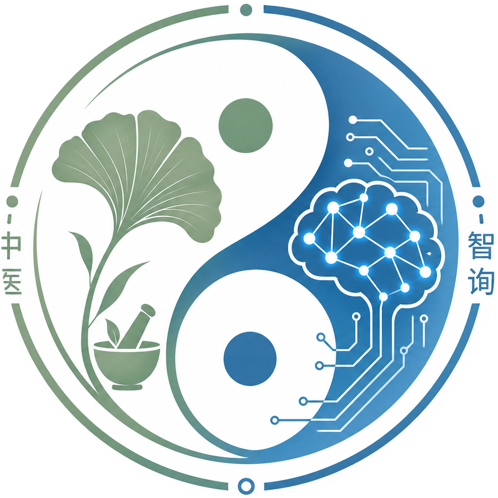

TCM Intelligent Inquiry · Phase 01流式对话 · LangGraph ReAct Agent · 向量 RAG · MCP 动态扩展 · 多端会话体验
前后端分离 · 网关聚合路由 · Agent 统一编排工具与外部能力
一次对话请求如何触发检索、方剂库与 MCP · 与底层存储的对应关系
基于 HomePageClient：对接后端 SSE 与鉴权，强调会话管理与可观测交互。
AuthForm + 品牌化 AppLogo/api/auth/oauth/settings 设置与偏好| 运行时 | create_react_agent；默认图按 LLM 指纹与工具列表缓存；命名 Agent 可按库记录组装。 |
|---|---|
| SSE 事件 | notice · meta · text-delta · thinking-delta · tool-call / tool-result · error |
| 内置工具 | search_tcm_knowledge · formula_lookup · recommend_formulas · searx_web_search（可选） |
| MCP | 外部工具以 mcp_* 前缀注入；启动时从库恢复注册。 |
交互观感：前端可按 SSE 类型并行展示正文、思考过程与工具调用卡片，便于演示与排错。
worker）。EMBEDDING_PROVIDER）；Qdrant 存储与语义召回。gte-rerank，与向量召回共用检索管线；Agent 工具与 HTTP API 对齐。CHUNK=512、OVERLAP=64；可按 Markdown 章节粗分。| API | GET/POST /api/mcp 列出与注册；/{id}/refresh 重新发现工具；Streamable HTTP / SSE 客户端。 |
|---|---|
| 健康 | MCP_PROBE_INTERVAL_SECONDS 周期性探测（可设为 0 关闭）；依赖检查 /health/deps。 |
| 联网 | Compose 内置 SearXNG（示例端口 8888），供 searx_web_search；勿对公网裸暴露。 |
| 服务 | 默认映射 | 备注 |
|---|---|---|
| PostgreSQL | 5433→5432 | 避免与本机 5432 冲突 |
| Redis | 6379 | Celery broker / 缓存 |
| Qdrant | 6333 · gRPC 6334 | 向量服务 |
| SearXNG | 8888→8080 | 元搜索 JSON API |
多数对话与检索参数可在 .env 中调整并由下一轮请求生效（数据库连接等仍以进程启动时为准）。
多模型：LLM_PROVIDER 支持 qwen / openai / anthropic / glm / deepseek 等 OpenAI 兼容路由。
前后端整体框架与 AI Agent（ReAct、工具注册表、执行器）；指导组员完成 MCP、Tool、接口契约与联调。
登录与第三方 OAuth、登录页与品牌化组件；前端 UI/UX（主页会话体验、动效与视觉一致性）。
知识库设计与搭建：入库链路、向量索引、检索与 Agent search_tcm_knowledge 对齐。
MCP设计与搭建：服务注册、工具刷新、LangChain 桥接与健康探测策略。
免责声明：系统输出仅供文化与知识参考，不构成诊疗建议。